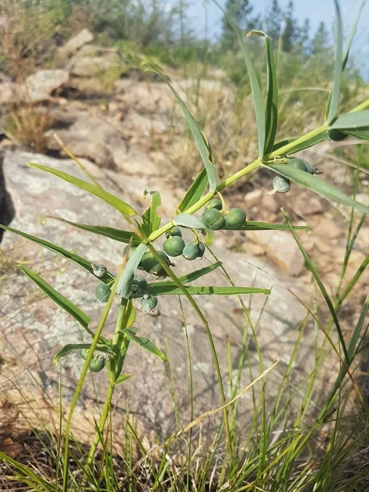

花卉与草本 · 植物界
黄精 Polygonatum sibiricum

天门冬科多年生草本，夏季开白色小花，花序下垂，根茎肥厚、可入药，是著名的药食两用植物，应用历史悠久。
- 分类
- 门被子植物门纲木兰纲目天门冬目科天门冬科属黄精属
- 栖息环境
- 林下、灌丛与山坡阴湿处，喜凉爽半阴
- 地理分布
- 中国东北、华北、华东至西南各地
- 保护级别
- 暂无评估；野生资源因过度采挖而减少
物种志
黄精为天门冬科黄精属多年生草本，株高 50–100 厘米，地下具肥厚的肉质根状茎，常呈结节状。茎直立，叶轮生，每轮 4–6 枚，线状披针形，先端卷曲。花腋生，伞状花序，花冠筒状，白色至淡黄色，下垂，花期 5–6 月；果实为浆果，球形，成熟时黑色，果期 8–9 月。
黄精原产中国东北、华北、华东至西南各地，生于林下、灌丛与山坡阴湿处。它喜凉爽湿润、半阴的环境，耐寒性强，适宜疏松肥沃、排水良好的土壤。根茎肥厚，可入药，有补气养阴、健脾润肺、益肾之效，也是常见的药食两用植物，可煲汤、泡酒；栽培以根茎繁殖为主，生长周期较长。野生黄精因采挖过度，资源日益减少，应重视人工栽培。
形态与习性
- 株高50–100 厘米，根状茎结节状
- 花期5–6 月，花白色至淡黄色
- 果期8–9 月，浆果黑色
- 光照喜半阴，忌强光暴晒
- 水分喜湿润，忌积水
- 土壤疏松肥沃、排水良好的土壤
- 主要用途根茎入药、煲汤泡酒，林下观赏
趣味知识
- 黄精的根茎肥厚、呈结节状，是著名的药食两用材料。
- 它的叶片轮生，先端卷曲，是辨认黄精属植物的重要特征。
- 黄精生长缓慢，人工栽培需多年才能采收。
- 野生黄精因采挖过度而减少，应优先选用栽培品。